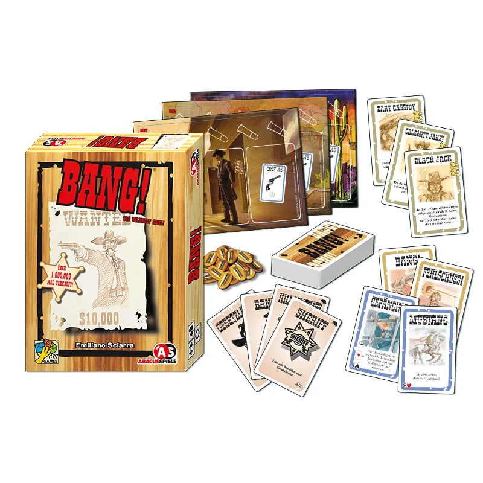
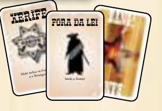
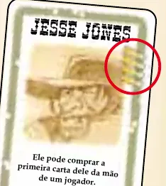
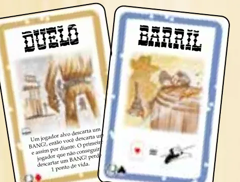
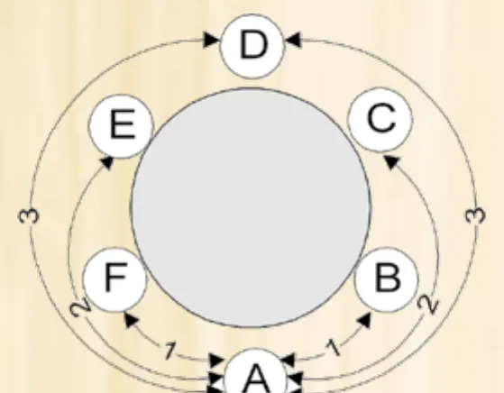
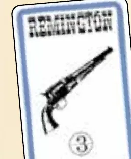
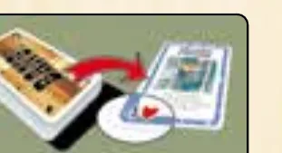

Imagem: Asmodee UK · 4ª edição, Reino UnidoPapéis ocultos · Jogo de cartas
Como jogar BANG!
Para quem nunca jogou4 a 7 jogadores20 a 40 min8+Edição Asmodee (Galápagos)
· Redação Elite Boardgamers
Resumo em 1 minuto
Com uma identidade secreta (Xerife, Assistente, Fora da lei ou Renegado), você joga cartas para atirar, se esquivar e se curar; vence o lado que cumprir o objetivo: matar o Xerife, proteger a lei ou ser o último vivo.
No turno, compre 2 cartas, jogue quantas quiser (só 1 carta BANG!) e fique com tantas cartas quantas balas tiver.
A distância é o menor número de lugares até o alvo; a arma só diz até onde o BANG! alcança, quem muda a distância são Mustang e Escopo.
Se o Xerife morre, vencem os Fora da lei, a não ser que o Renegado seja o último vivo; mortos os Fora da lei e o Renegado, vence a lei.
Como você aprende: 3 etapas, da mesa montada à contagem de pontosLeitura do essencial: cerca de 7 min
À vista, só o essencial para jogar. O que abre com + é explicação, exemplo, exercício ou regra de caso especial: abra quando precisar.
Comece a jogar em 4 minutos

Imagem: Abacusspiele · edição alemã
Meta: em 4 minutos de leitura, montar a mesa e jogar o primeiro turno sem abrir o manual.
A ideia do jogo
Cada jogador recebe em segredo uma identidade. Só o Xerife se mostra; os outros podem ser Assistentes (do lado dele), Fora da lei (querem matá-lo) ou o Renegado (quer ser o último vivo). Você joga cartas para atirar, se esquivar e se curar, e cada tiro custa pontos de vida, marcados com balas. Como as identidades são secretas p. 2, boa parte da partida é descobrir quem é quem.
Monte a mesa
Para 4 a 7 jogadores p. 1.
Cada jogador pega um tabuleiro e o põe à sua frente p. 2.
Separe as identidades: com 4, Xerife, Renegado e 2 Fora da lei; com 5, mais 1 Assistente; com 6, Xerife, Renegado, 3 Fora da lei e 1 Assistente; com 7, Xerife, Renegado, 3 Fora da lei e 2 Assistentes. Dê uma a cada um, virada para baixo. O Xerife vira a dele; os outros guardam segredo p. 2.
Embaralhe os personagens e dê um a cada jogador, virado para cima. Cada um lê a habilidade em voz alta e pega tantas balas quantas o personagem mostra. O Xerife pega uma bala a mais p. 2.
Sobras de identidades, personagens e tabuleiros voltam para a caixa p. 2.
Embaralhe as 80 cartas de jogo e dê a cada um tantas cartas quantas balas ele tem. O resto é a pilha de compra, com espaço ao lado para o descarte p. 1 e 2.
Seu primeiro turno
O Xerife começa, e a vez segue no sentido horário, ou seja, passa para o jogador à esquerda. O turno tem três fases p. 3:
Compre duas cartas do topo da pilha.
Jogue quantas cartas quiser, com três limites: só 1 carta BANG! por turno; nunca duas cartas com o mesmo nome à sua frente; só 1 arma à sua frente.
Descarte o que passar do seu limite: no fim do turno, a mão pode ter no máximo tantas cartas quantas balas você tem.
Carta de borda marrom vai para o descarte e faz efeito na hora. Carta de borda azul (armas, Mustang, Barril e outras) fica à sua frente e vale até sair de lá p. 3. Você começa com o Colt. 45 impresso no tabuleiro, que alcança só os vizinhos; cada arma tem na mira o número do alcance dela p. 5.
Um BANG! num jogador ao seu alcance tira 1 ponto de vida dele: ele descarta uma bala na pilha do meio da mesa. Ele pode evitar o tiro na hora, mesmo fora da vez, jogando um Errou!; o BANG! vai para o descarte de qualquer jeito p. 6.
Ainda não precisa saber
Distância com mais jogadores, Mustang e Escopo, Cerveja e as cartas de ataque: etapa 2. Barril, Prisão, Dinamite, eliminação e recompensa: etapa 3. Habilidade de cada personagem: Situações especiais.
Como a partida acaba
Se o Xerife morre, vencem os Fora da lei, a menos que o Renegado seja o único vivo: aí ele vence. Se morrem o Renegado e todos os Fora da lei, vencem o Xerife e os Assistentes p. 4.
Prefere ver? Uma partida resumida em vídeo. Ele complementa este guia; em caso de diferença, vale o manual.
BANG! - Gameplay resumida, canal Duque Board Games · abrir no YouTube
0Antes de tudo: o que é este jogoOpcional
Imagem: Abacusspiele · edição alemãAbrir esta seção
BANG! é um jogo de cartas de faroeste, de Emiliano Sciarra, para 4 a 7 jogadores a partir de 8 anos p. 1 e 12; a página oficial da dV Giochi indica partidas de 20 a 40 minutos. Cada jogador é um personagem do Velho Oeste com uma identidade secreta que define o lado dele: a lei (Xerife e Assistentes), os Fora da lei ou o Renegado, sozinho p. 1.
Não há pontos: a partida acaba quando um lado cumpre o objetivo p. 4. Três ideias pedem atenção: a distância, que decide quem você alcança; o limite de mão, que encolhe com os tiros; e o "comprar!", o teste de sorte de algumas cartas.
Não confunda com BANG! O Jogo de Dados, outra caixa, com regras próprias.
1Como este guia ensinaOpcional
Imagem: Abacusspiele · edição alemãAbrir esta seção
Três etapas: montar e jogar um turno; atirar e se defender; sorte, eliminação e fim. Cada uma tem Para entender (o porquê), Passo a passo (a regra de sempre), regras adicionais em blocos à parte e tarefas com ajuda decrescente: exemplo resolvido, tarefa para completar e sua vez. Escolha uma opção em cada pergunta para ver a certa e a explicação. No fim, uma avaliação diz o que reler, e a folha de consulta vai para a mesa.
2Etapa 1: montar a mesa e jogar um turno
Por que funciona assim

As cartas de identidade: Xerife, Fora da lei e, atrás, o verso das cartas. Ilustração: manual Galápagos p. 1
Jogadores
Xerife
Renegado
Fora da lei
Assistentes
4
1
1
2
0
5
1
1
2
1
6
1
1
3
1
7
1
1
3
2

Uma carta de personagem, Jesse Jones; o círculo vermelho marca as balas impressas, os pontos de vida com que ele começa. Ilustração: manual Galápagos p. 2Por que funciona assimRegra adicional: Primeiras partidasPor que funciona assim

Um Duelo, carta de borda marrom, e um Barril, carta de borda azul. Ilustração: manual Galápagos p. 3Regra adicional: Pilha de compra vaziaRegra adicional: Diligência e Wells FargoRegra adicional: EmpórioRegra adicional: Descartar por vontade própriaVer um exemplo resolvidoPratique esta etapa: exercícios com respostas
3Etapa 2: atirar e se defender
Por que funciona assim

A distância numa mesa de 6: de A até B e até F é 1; até C e até E, 2; até D, 3, pelos dois lados. Ilustração: manual Galápagos p. 4Por que funciona assim
Arma
Alcance
Colt. 45 (tabuleiro)
1
Volcanic
1, com quantos BANG! quiser no turno
Schofield
2
Remington
3
Rev. Carabine
4
Winchester
5
Remington e Volcanic aparecem no manual p. 5; os outros alcances vêm da lista oficial de cartas da dV Giochi.

A Remington: borda azul, ilustração em preto e branco e o número 3 na mira, o alcance dela. Ilustração: manual Galápagos p. 5Regra adicional: VolcanicRegra adicional: SaloonRegra adicional: GatlingRegra adicional: Indígenas!Regra adicional: DueloSobre a edição: "Pode descartar"Regra adicional: Pânico!Regra adicional: Cat BalouSobre a edição: Barril contra GatlingVer um exemplo resolvidoVer um exemplo resolvidoPratique esta etapa: exercícios com respostas
4Etapa 3: sorte, eliminação e fim
Por que funciona assim

O "comprar!" do Barril: a carta do topo vai para o descarte e mostra Copas, e o tiro é cancelado. Ilustração: manual Galápagos p. 9Regra adicional: Depois da explosãoRegra adicional: Preso continua no jogoRegra adicional: Dinamite e Prisão juntasRegra adicional: A Dinamite circulaRegra adicional: Quem leva a recompensaVer um exemplo resolvidoDica: SugestãoPratique esta etapa: exercícios com respostas
5Situações especiaisOpcional
Imagem: Abacusspiele · edição alemãAbrir esta seção
Os 16 personagensp. 10 e 11. Cada jogador só precisa ler o seu; os outros ouvem as habilidades na preparação.
Personagem
Balas
Habilidade
Bart Cassidy
4
Cada vez que perde pelo menos 1 ponto, compra 1 carta do baralho
Black Jack
4
Na fase 1, mostra a segunda carta; Copas ou Ouros, compra mais 1
Jane Calamidade
4
Usa BANG! como Errou! e vice-versa; o Errou! usado como BANG! conta como o BANG! do turno, salvo com Volcanic
El Gringo
3
Cada ponto que perde por carta de outro jogador lhe dá uma carta aleatória da mão desse jogador
Jesse Jones
4
Na fase 1, a primeira carta pode vir, aleatória, da mão de outro jogador
Jourdonnais
4
Tem um Barril o tempo todo; com um Barril de verdade, tenta duas vezes
Kit Carlson
4
Na fase 1, olha 3 cartas, fica com 2 e devolve 1 ao topo
Duke Sortudo
4
Em todo "comprar!", vira 2 cartas e escolhe; as duas vão para o descarte
Paul Regret
3
Tem um Mustang o tempo todo; com um de verdade, soma 2
Pedro Ramirez
4
Na fase 1, a primeira carta pode vir do topo do descarte
Rose Doolan
4
Tem um Escopo o tempo todo; com um de verdade, vê os outros a -2
Sid Ketchum
4
A qualquer momento, descarta 2 cartas da mão por 1 ponto de vida
Slab, o Assassino
4
Cancelar o BANG! dele exige 2 Errou!; o Barril bem-sucedido conta como 1
Suzy Lafayette
4
Assim que fica sem cartas na mão, compra 1
Sam, o Abutre
4
Pega para a mão todas as cartas de quem for eliminado
Willy the Kid
4
Joga quantos BANG! quiser no turno
Regra adicional: Dúvidas de personagem (FAQ oficial)Regra adicional: Na mesaRegra adicional: Cerveja sem efeitoRegra adicional: Várias partidas seguidas
6Avaliação finalOpcional
Imagem: Abacusspiele · edição alemãAbrir esta seção
Responda sem consultar. Cada resposta diz o que reler.
1. O Xerife tirou um personagem de 3 balas. Com quantas cartas começa?
Uma bala a mais, e cartas iguais às balas p. 2. Releia a etapa 1.
2. Mesa de 6. Denis está a 3 e tem um Mustang. Você tem uma Remington. Pode atirar nele?
O Mustang soma 1, e a Remington alcança 3 p. 5 e 8. Releia a etapa 2.
3. Num Duelo, você pode jogar Errou! para não perder o ponto?
Errou! e Barril não valem no Duelo p. 8; só Jane Calamidade pode descartar um Errou! como se fosse BANG! (p. 10; FAQ oficial). Releia a etapa 2.
4. Fora do seu turno, você leva o tiro que tira o seu último ponto. Tem um Saloon e uma Cerveja. O que salva você?
O Saloon não é uma Cerveja p. 6 e 11. Releia a etapa 2.
5. No "comprar!" da Dinamite sai um Valete de Espadas. O que acontece?
Explode só com Espadas de 2 a 9 p. 9. Releia a etapa 3.
6. O Renegado mata o Xerife, e ainda há um Fora da lei vivo. Quem vence?
O Renegado não é o único vivo p. 4. Releia a etapa 3.
7Para consultar durante a partida
Imagem: Abacusspiele · edição alemã
O turno (começa o Xerife, sentido horário). Antes da fase 1, teste a Dinamite e depois a Prisão, se estiverem à sua frente.
Compre 2 cartas.
Jogue o que quiser: 1 carta BANG!; nada com nome repetido à sua frente; 1 arma.
Descarte até ficar com tantas cartas quantas balas tem agora.
Fora do seu turno: Errou! (tiro em você), Cerveja (só no golpe do último ponto) e BANG! descartado em resposta a Indígenas! ou Duelo p. 3, 6 e 8.
Carta
Efeito
Alcance
BANG!
Alvo perde 1 ponto, se não cancelar
Sua arma
Gatling
BANG! em todos; não é carta BANG!
Todos os outros
Indígenas!
Cada um descarta um BANG! ou perde 1
Todos os outros
Duelo
Descarte alternado de BANG!; perde 1 quem parar
Qualquer jogador
Pânico!
Pegue uma carta
Distância 1
Cat Balou
Faça descartar uma carta
Qualquer jogador
Cerveja / Saloon
+1 ponto para você / para todos
Diligência / Wells Fargo / Empório
Compre 2 / 3 / 1 de várias abertas
Mustang / Escopo
Os outros veem você a +1 / você vê a -1
Barril
"comprar!": Copas = Errou!
Prisão
"comprar!": Copas joga, senão pula; nunca no Xerife
Qualquer jogador
Dinamite
"comprar!": Espadas 2 a 9, perde 3; senão, à esquerda
Eliminação: mostre a identidade e descarte tudo. Matou Fora da lei: compre 3. Xerife matou Assistente: descarta tudo.
Fim: Xerife morto: vence o Renegado se for o único vivo; senão, os Fora da lei. Renegado e Fora da lei mortos: vencem Xerife e Assistentes.
8Fontes
Imagem: Abacusspiele · edição alemã
Galápagos. BANG!: livro de regras (edição brasileira, BNG001, "v1.0", 12 páginas, 2025; tradução de Karen Nakaoka; jogo de Emiliano Sciarra). Biblioteca de downloads da Asmodee Brasil, https://www.asmodee.com.br/download-library. Consultado em 04/11/2026.
Regras conferidas no livro de regras da edição brasileira de BANG! (Galápagos, código BNG001, versão 1.0, tradução de Karen Nakaoka), baixado da biblioteca de downloads da Asmodee Brasil, com a FAQ oficial da dV Giochi, a editora italiana, para as dúvidas que o manual não resolve. Este guia é do jogo de cartas base; o BANG! O Jogo de Dados e as expansões têm regras próprias.